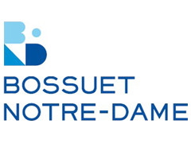

Je suis étudiant en 1ère année à l'ESSEC Business School. Je cherche actuellement un stage de 3 mois dans le secteur de l'hôtellerie.
Découvrir l'ESSECMadame, Monsieur, Titulaire d’un baccalauréat Économique et Social et actuellement étudiant en 1ère année à l’ESSEC Business School, je souhaiterais vivement vous soumettre ma candidature afin de mener à bien mon stage de fin d’année au sein de votre établissement à compter de mi-mai 2020 pour une durée de trois mois dans le secteur du management et des ressources humaines. Votre établissement hôtelier est un modèle par excellence de service et de rigueur. Dès lors, l’opportunité de me former auprès de vos équipes me permettra, sans nul doute, de développer de solides compétences et d'acquérir une expérience pratique des fonctions inhérentes au domaine de la gestion hôtelière. Ce stage me permettrait d'exercer au sein d'un domaine dans lequel je pourrais mettre à profit ma rigueur, ma ténacité, ainsi que mon autonomie, dans un secteur qui me tient particulièrement à cœur. Se présente à moi une opportunité de mettre en lumière les rouages et les fonctionnements d'un hôtel de renom, dans lequel je pourrais mener à bien mon stage en tant qu'assistant des Ressources Humaines. L'aspect humain est au cœur de l'entreprise, et pouvoir contribuer au bon fonctionnement, à la cohésion de l'équipe, constitue à mon sens, une grande richesse intellectuelle, humaine et professionnelle. Je suis convaincu de pouvoir tirer de cette expérience, une grande source d'épanouissement personnel.
J'ai étudié au Lycée Bossuet Notre-Dame dans lequel j'ai obtenu un baccalauréat Economique et Social. J'ai décidé de me tourner vers une école de commerce puisqu'elle me fournit les compétences requises pour appréhender au mieux le secteur dans lequel je souhaite me diriger (comptabilité, marketing, management). Les stages proposés tout au cours de mon cursus à l'ESSEC seront une valeur ajoutée à ma formation professionnelle.
J’ai eu la possibilité de réaliser plusieurs expériences dans le cadre scolaire essentiellement qui m’ont permis de me renseigner davantage notamment dans le cadre de la restauration. En juin 2015, dans l’optique de mon stage de 2nde, j’ai eu l’opportunité d’exercer la fonction de stagiaire dans la SARL ANOSTE situé près de la Bourse où divers postes m’ont été proposé. En effet, les deux semaines m’ont permis d’alterner entre serveur dans la partie Tapas situé au rez de chaussée de l’établissement et la partie gastronomie située à l’étage du restaurant où la découverte de la profession a été un atout à la fois fédérateur et enrichissant. A cela s’ajoute la cohésion du groupe dans laquelle j’ai pu exercer, où chacun a pris le temps de m’enseigner rigoureusement les méthodes à suivre. Par ailleurs, mes années collège ont été rythmées par mon implication dans un mouvement de jeunesse juif l’Habonim Dror qui m’a donné le gout du partage et de la transmission qui s’est aboutit par ma participation en tant que volontaire dans les bases militaires de Tsahal.